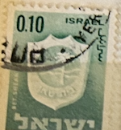
| SOURCE | TITLE| IMAGE MATCH | click to source page |
| HipStamp | Israel - #281 Bet Shean - Used | Middle East - Israel, General Issue Stamp / HipStamp | 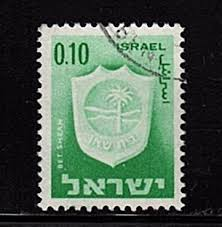 |
| eBay | ISRAEL #281 1965 10a BET SHEAN MINT VF NH O.G | eBay |  |
| HipStamp | Israel Stamp: 1965-Sc# 389e-arms of Hadera & Ashdod Mint Full Sheet | Middle East - Israel, Back of Book (Other) - Proofs & Essays - Essays Stamp / HipStamp | 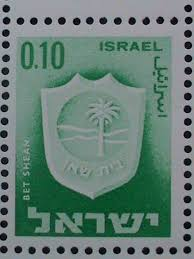 |
| Colnect | Stamp: Bet Shean (Israel(Town Emblems (1965-1975)) Mi:IL 326x,Sn:IL 281,Yt:IL 276,Sg:IL 299,Isr:IL 341 📮 | 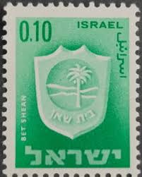 |
| eBay | Brown Full Sheet Israeli Stamps for sale | eBay | 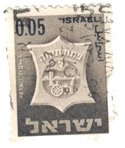 |
| Cherrystone Auctions | Versailles Collection Part III; U.S. & Worldwide Stamps & Postal History - November 1-3, 2005 - ISRAEL | 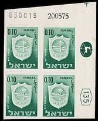 |
| HipStamp | 1965 Israel Scott Catalog Number 290 Used | Middle East - Israel, General Issue Stamp / HipStamp | 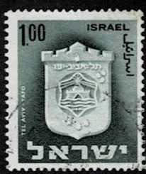 |
| Shutterstock | 1+ Thousand Coat Arms Israel Royalty-Free Images, Stock Photos & Pictures | Shutterstock | 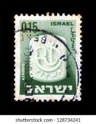 |
| HipStamp | Israel #290 Single Used | Middle East - Israel, General Issue Stamp / HipStamp | 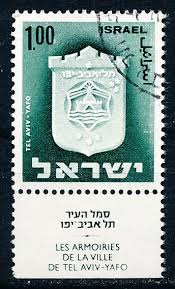 |
| HipStamp | Search "Israel 1965" / HipStamp | 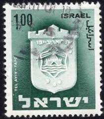 |
| HipStamp | Israel 22/10/65 Towns 1.00 Plate Block MNH Bale Value $ 10.00 | Middle East - Israel, Stamp / HipStamp | 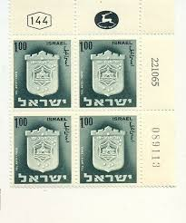 |
| eBay | Vintage Israel Postage Stamp 1965 Ashdod .15 | eBay | 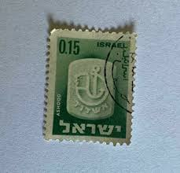 |
| Wikimedia.org | File:Stamp of Israel - Town emblems 1965 - 050IL.jpg - Wikimedia Commons | 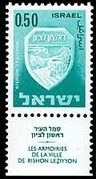 |
| Alamy | Postage stamps of the Israel. Stamp printed in the Israel. Stamp printed by Israel Stock Photo - Alamy | 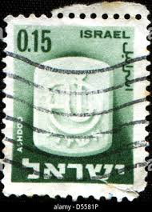 |
| Colnect | Stamp: Ashdod (Israel(Town Emblems (1965-1975)) Mi:IL 328x,Sn:IL 283,Yt:IL 278,Sg:IL 301,Isr:IL 343 📮 | 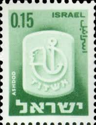 |
| Alamy | ISRAEL - CIRCA 1966: stamp printed by Israel, shows Theodor Herzl, circa 1966 Stock Photo - Alamy | 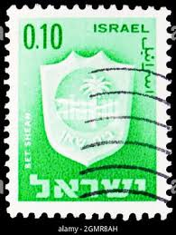 |
| Wikimedia.org | File:Stamp of Israel - Town emblems 1965 - 010IL.jpg - Wikimedia Commons | 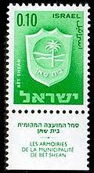 |
| HipStamp | Israel - #290 Arms of Tel-Aviv - Used | Middle East - Israel, General Issue Stamp / HipStamp | 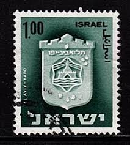 |
| Colnect | Stamp: Tel Aviv-Yafo (2 phosphor bars) (Israel(Town Emblems (1965-1975)) Mi:IL 338y,Sn:IL 290i,Yt:IL 571,Sg:IL 308p 📮 | 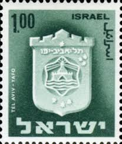 |
| WordPress.com | I. Summer of conflict – 55th anniversary of the Six Day War, June 1967 – Israeli postage stamps בולי דואר ישראליים | 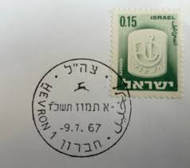 |
| Flickr | Israel Postage Stamp: Tel Aviv - Yafo | catalog #353, c. 196… | Flickr | 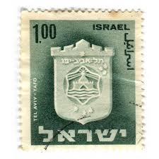 |
| Alamy | A stamp from Israel depicting official symbol city Rehovot. Rehovot is mostly known for "Weizmann Institute Science" which is Stock Photo - Alamy | 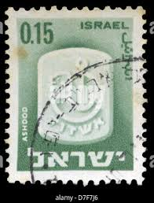 |
| Wikipedia | קובץ:Stamp of Israel - Town emblems 1965 - 015IL.jpg – ויקיפדיה | 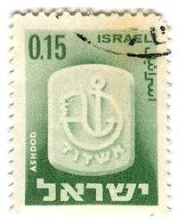 |
| საქართველოს ეროვნული ბიბლიოთეკა | Iverieli: ისრაელში გამოშვებული მარკა |  |
| Dreamstime.com | Emblem of Israel Classic Vehicle Club - Club 5 Attached To the Car Editorial Photo - Image of exhibition, classic: 115142331 | 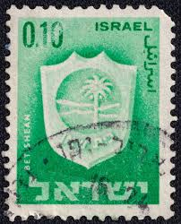 |
| Dreamstime.com | Bet Shean Town Emblem City on a 1966 Israel Vintage Postage Stamp. Editorial Image - Image of postmark, post: 386802610 | 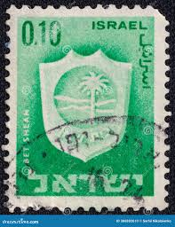 |
| HipStamp | Israel - #290 Arms of Tel-Aviv - Used | Middle East - Israel, General Issue Stamp / HipStamp | 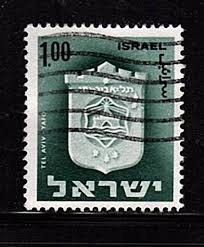 |
| Dreamstime.com | Israel Circa 1965: a Post Stamp Printed in Israel Showing a Tel Aviv-Yafo Coat of Arms Editorial Photo - Image of 1965, mark: 234077966 | 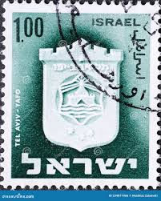 |
| eBay | ISRAEL 1967 TWO COVERS FIRST CANCEL BIRZEIT & JERICHO CITY AFTER SIX DAY WAR | eBay | 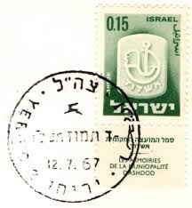 |
| Shutterstock | Postage Stamp Israel: Over 2,803 Royalty-Free Licensable Stock Photos | Shutterstock | 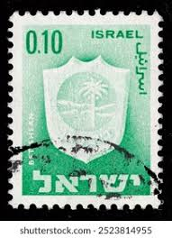 |
| Cherrystone Auctions | U.S. & Worldwide Stamps & Postal History - September 13-14, 2017 - ISRAEL | 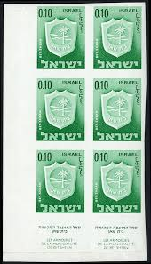 |
| WordPress.com | July 2022 – Israeli postage stamps בולי דואר ישראליים | 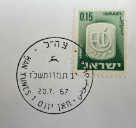 |
| Shutterstock | Green Shield Stamps: Over 222 Royalty-Free Licensable Stock Photos | Shutterstock | 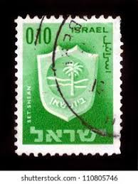 |
| vividagallery.com | Israel Beit Shean Municipal Emblem Palm Tree Archaeology Green Gradient Greeting Card by Vivida Gallery | 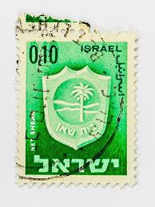 |
| HipStamp | Israel # 290 used | Middle East - Israel, General Issue Stamp / HipStamp | 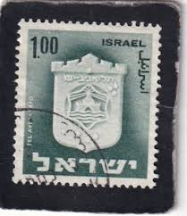 |
| HipStamp | Antonios Philatelics / HipStamp |  |
| eBay | Machine Cancel Israeli Stamps for sale | eBay | 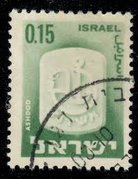 |
| HipStamp | Israel - #393 Arms of Ramat Gan - Used | Middle East - Israel, General Issue Stamp / HipStamp | 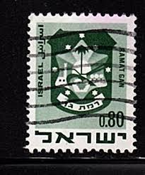 |
| Shutterstock | 1 Beit Tab Royalty-Free Images, Stock Photos & Pictures | Shutterstock |  |
| Cherrystone Auctions | Including The American Bank Note Company Archives - November 15-16, 2006 - ISRAEL | 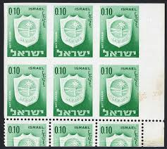 |
| Shutterstock | Israel Circa 1975 Stamp Printed Israel Stock Photo 197114561 | Shutterstock | 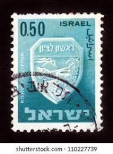 |
| eBay | ISRAEL MIDDLE EAST STAMPS USED LOT 121CA | eBay | 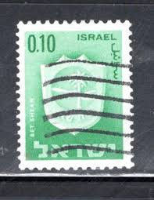 |
| Dreamstime.com | Tel Stamp Stock Photos - Free & Royalty-Free Stock Photos from Dreamstime |  |
| Alamy | MOSCOW, RUSSIA - MARCH 13, 2022: Postage stamp printed in Israel shows Tel Aviv-Yafo, Town Emblems (1965-1967) serie, circa 1965 Stock Photo - Alamy | 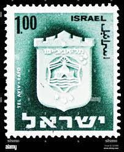 |
| Shutterstock | 6+ Thousand "israel Stamp" Royalty-Free Images, Stock Photos & Pictures | Shutterstock | 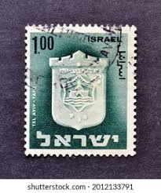 |
| Shutterstock | Postage Stamp Israel: Over 2,801 Royalty-Free Licensable Stock Photos | Shutterstock | 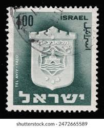 |
| מורשת מכירות פומביות | Lot 64 - Collection of 9 Israeli Stamps Given Directly by the Rebbe | מורשת מכירות פומביות | 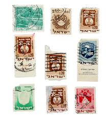 |
| Shutterstock | Israel 1966 February 2 10 Agorot Stock Photo 2274366469 | Shutterstock | 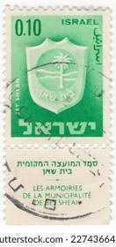 |
| allnumis.com | 0.25 Israeli Lira - Town Emblems - Acre (Akko), Cities - Israel - Stamp - 3511 | 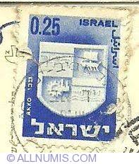 |
| GetArchive | Stamps of Israel -shavuot 85 - PICRYL - Public Domain Media Search Engine Public Domain Image |  |
| Alamy | Emblem of israel hi-res stock photography and images - Page 13 - Alamy | 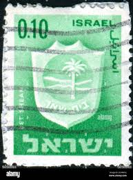 |
| eBay | Handstamped Military, War Middle Eastern Stamps for sale | eBay | 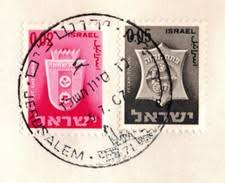 |
| Bob Shop | Israel - ISRAEL - F41 was sold for 0.45 on 30 May at 19:08 by Jurgen 2 in Nelspruit (ID:587816301) | 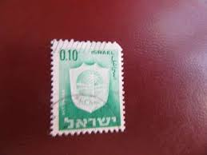 |
| Shutterstock | 73+ Thousand Old Town Israel Royalty-Free Images, Stock Photos & Pictures | Shutterstock |  |
| Colnect | Stamp: Ramat Gan (Israel(Town Emblems (1969-1973)) Mi:IL 448,Sn:IL 393,Yt:IL 386,Sg:IL 424,Isr:IL 468 📮 | 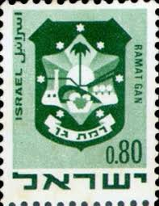 |
| Shutterstock | Shekel 1: Over 261 Royalty-Free Licensable Stock Photos | Shutterstock |  |
| Delcampe | Search in the "1948-59 > Unused stamps (with tabs)" category | Delcampe | 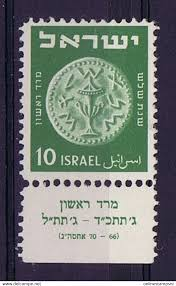 |
| Shutterstock | 3+ Thousand Israel Postmark Royalty-Free Images, Stock Photos & Pictures | Shutterstock | |
| Alamy | Israel stamp hi-res stock photography and images - Page 7 - Alamy |
{kind=link}
{kind=link}
{kind=link}